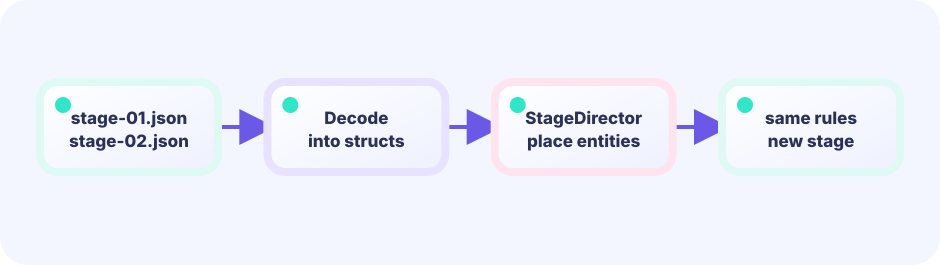

Group one level
Name, sky, platforms, and goal form one data record.
★★★☆☆ / PLAYABLE
Load three sets of platforms, sky colors, and goals into the same movement rules.
FIRST-TIME READER
Find where this one line is used, then follow how its value changes on screen. This is the shared Update → Draw skeleton for the whole path; the numbered steps below add one system at a time.
ONE RULE TO TRACE
Match the explanation to this line, then test the change in the game.
stage := stages[stageIndex]

PLAY FIRST
Load three sets of platforms, sky colors, and goals into the same movement rules.
DEEP DIVE
Adding a level should not require rewriting Update. Store platforms, background, and goal in a stage struct, then load the selected index.
Name, sky, platforms, and goal form one data record.
Put three stages in []stage and select by index.
Gravity and collision functions stay the same.
SYSTEM LAB
Adding a level should not require rewriting Update. Store platforms, background, and goal in a stage struct, then load the selected index.
START
GO + EBITENGINE
This is the central rule from the playable game.
type stage struct { sky color.RGBA; blocks []rect; goal rect }
current := stages[stageNumber]Change one value and compare the feel or difficulty.
Put three stages in []stage and select by index.
Gravity and collision functions stay the same.
FEEDBACK